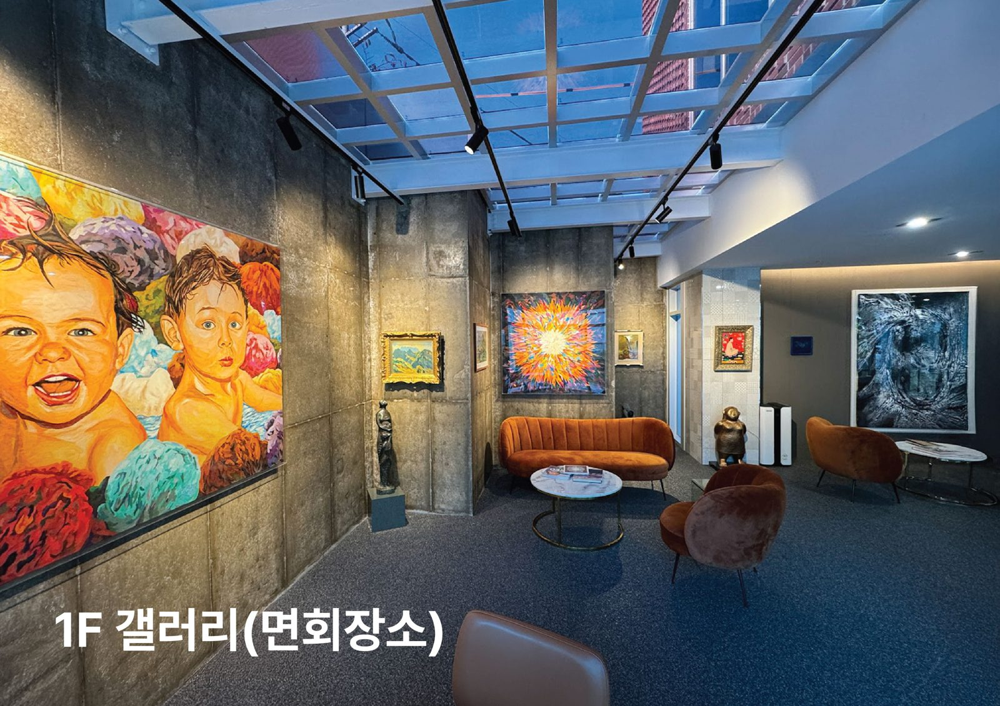
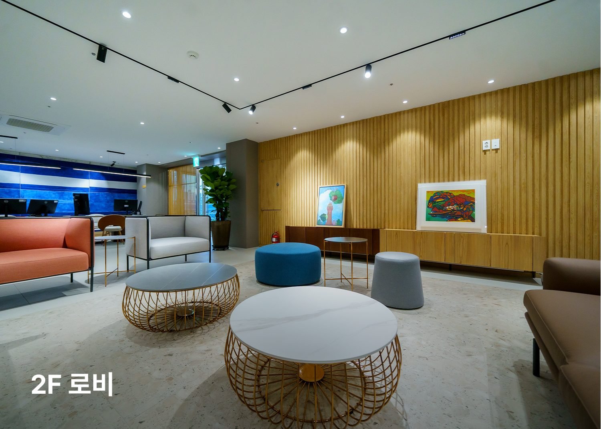

오시는 길·면회 안내
하일렌요양병원은 전남광주통합특별시 서구 상무대로 1176에 있습니다. 보호자 면회는 1층 갤러리에서 하실 수 있으며, 밤늦은 시간과 새벽을 빼면 시간 제한이 없습니다.
이동·교통 문의는 병원에 문의해 주세요. [디렉터 확인] 송정역·버스터미널에서 병원까지 걸리는 시간의 실측값과 측정 기준(차량 기준인지) [디렉터 확인] 차량 지원 범위와 신청 조건은 이 페이지에 적지 않았습니다. 발행정본 B-22 미결 항목(입원환자 치료일 왕복 차량)에 대한 병원장님 판정(긴급점검 9/18 항목)과 법무 확인(의료법 제27조③)이 끝난 뒤에 적습니다. 그 전까지는 위 고정 문구만 둡니다.
- 주소
- 61928 전남광주통합특별시 서구 상무대로 1176
- 전화
- 062-439-1000
- 면회 장소
- 1층 갤러리
- 면회 시간
- 밤늦은 시간과 새벽을 빼면 시간 제한이 없습니다.
- 주차
- [디렉터 확인] 보호자·외래 환자의 주차 가능 여부와 위치(10월 프로그램 공지에 「1층 주차장」이 있으나 방문객 이용 조건은 미확인)
- 대중교통
- [디렉터 확인] 가까운 역·버스 정류장 이름과 병원 출입구 안내
- 문의
- 원내 상담실 · 카카오톡 채널 · 062-439-1000
지도로 길 찾기
아래 버튼을 누르면 지도 앱에서 병원 위치를 바로 볼 수 있습니다.
[디렉터 확인] 현재 첫 화면의 「돌고개역 3번 출구에서 586m」는 실측 근거가 확인되지 않아 이 페이지에 넣지 않았습니다. 근거가 확인되면 추가합니다.
면회는 어디서 하나요
갤러리는 환자와 보호자가 함께 머무는 휴식 공간입니다.


입원 서류와 병실 안내는 입원 안내에서 확인하실 수 있습니다. [디렉터 확인] 보호자 동반·간병 체계를 설명하는 확정 문장이 없어 적지 않았습니다.
병원 주변
병원 맞은편에 광주시립미술관 상록전시관과 하정웅미술관이 있습니다. [디렉터 확인] 미술관 문장을 홈페이지에 둘지 여부
오시는 길과 면회가 궁금하시면 언제든 물어보세요. 입원·외래·단기입원 상담은 원내 상담실에서 안내합니다.
제공 하일렌요양병원 · 검토 [디렉터 확인] 검토 의료진 · 검토일 [디렉터 확인] 검토일 · 갱신 2026-10-05